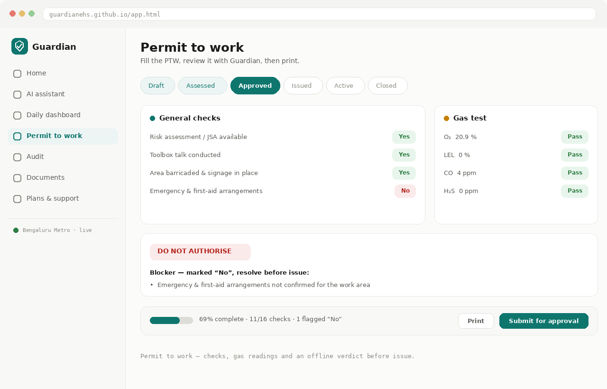
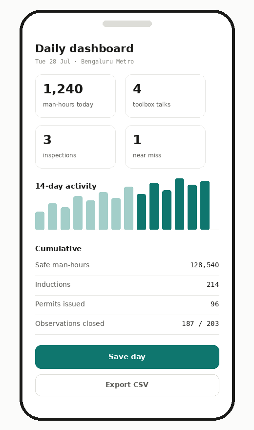

Gas test
20.9% O₂
Guardian is an EHS management platform with a built-in AI assistant. Raise a permit to work, run an audit, log the day's activities and print the report — and ask an assistant that understands hazards, standards and what a good control actually looks like. More models are coming: project management next, then cyber security.
No sign-up needed to look around · Installs like an app · Opens with no signal
Every permit moves through the same states your site already uses, with the checks, gas readings and sign-offs attached to it.
Guardian covers the four things an EHS function has to keep straight — permits, audits, the daily record and the documents that prove it — with an AI assistant sitting across all of them. Most safety software is bought by head office and endured by site. Guardian was written by a working EHS professional around the things that actually fill a day: a permit that has to be verified before work starts, an audit whose findings need owners and dates, a register that has to add up at month end, and a dozen questions an hour that need a straight answer.
It runs entirely in the browser. There is nothing to install, no licence, no server to buy. Open it and it works — on a laptop in the site office or a phone at the work front, with or without a connection.
Every core function is free, forever. Organisations that want it set up, branded and supported can take it as a service.
Installs to the home screen and opens with no signal. Permits, audits, the register and the reference engine all keep working.
Nothing is sent anywhere by default. Connect your own database and it stays in your account, protected at the row level.
Being straight about this matters: there is no "Guardian model" trained on secret safety data. What Guardian has is the domain layer — the prompts, the standards context, the permit and audit structure, and a deterministic engine that answers without any model at all. You decide what intelligence sits behind it.
A reference engine covering 50 EHS topics, with exact calculators: 5×5 risk scoring, LTIFR and TRIR from your own man-hours, gas readings against acceptance limits, and threshold rules for depth, height, noise and load.
Point it at Claude, any OpenAI-compatible API — including free tiers like OpenRouter or Groq — or a local Ollama model on your own machine. One-tap presets fill the settings for you.
Your API key is stored on your own device and sent only to the provider you chose. Nothing routes through a Guardian server, because there isn't one.
What comes next. The EHS assistant is the first model on the platform, not the last. Project management is next — programme risk, resource and schedule questions in the same place as the safety record — followed by a cyber-security assistant for teams whose site systems and OT networks need the same discipline. Each one plugs into the same permissions, the same offline behaviour and the same database.
Five workspaces shape how it answers: incident triage, near miss, first aid, risk assessment, and compliance & audit — each with its own focus and the standards you select carried into every reply. Ask from inside a permit, an audit or the day's register and the page travels with the question.
General, height, hot work and demolition checklists with Y/N/N-A, PPE, gas testing, TRA and isolation references, a SIMOPS check and attachments. A rule-based review gives a verdict — authorise, authorise with conditions, or do not authorise — with the blockers listed. Prints signature-ready.
Set the basis — general, ISO 45001, ISO 14001, ISO 9001, Factories Act, OSHA or a client standard — then log findings as NC, observation or OFI with actions, owners and due dates. Attach evidence as PDF, Excel, Word or photos. Print the report.
Log the day — manpower, man-hours, inductions, toolbox talks, trainings, audits, inspections, site walks, quality reports, observations, near misses, first aid, permits. See the day against the cumulative, a 14-day trend, and print a daily report. Export the register as CSV for your analytics team.
Print or download ready templates: JSA/HIRA, near-miss and incident reports, toolbox talk record, first-aid and inspection checklists — plus project-grade documents including a full EHS closure & KPI report, HSE plan, monthly KPI report, internal audit report and emergency response plan.
Real roles, not checkboxes: a requester raises the permit, an SME adds review comments, a verifier approves and issues it, and an administrator manages people and organisations. Every permission is enforced in the database, not hidden in the interface.
When your organisation is connected, a permit decision reaches the requester's phone as it's taken, and a register entry a colleague saved is already there when you open it — no refreshing, no re-sending.
Install it to the home screen and it launches offline. The reference engine, calculators, permit review, audit form and register all run on the device — the connection only matters when you want a live model or cloud sync.


Permits move through request, review and issue with a record of who authorised what. The daily register feeds the monthly KPI and the closure report at handover.
Hot work and confined-space permits carry gas readings checked against limits. Audits map to ISO 45001 or the Factories Act, with findings tracked to closure.
A shared standard for permits and toolbox talks across crews, with evidence attached to each job instead of scattered across phones.
Free access to the full toolkit, with printable material for field teams who train workers with no reliable connection.
A portable audit form with a findings register and a printable report — the same structure across every client site.
A working reference with the calculators, and real document formats to learn on rather than blank theory.
Guardian is a static front end with no build step, plus an optional database. That decision is the reason it can run from a phone, a laptop, a cheap host or a self-hosted box on your own network, and why it survives losing the internet mid-shift.
Go to the app. Everything works immediately — permits, audits, register, documents and the offline reference. No account required.
Open it in your browser, then choose Add to home screen or Install app. It opens like a native app and launches with no signal.
In Settings, pick your copilot: Claude, a free OpenAI-compatible provider, or a local Ollama model. Paste a key and use Test connection. Without one, the offline engine answers.
Create a free Supabase project, run supabase-setup.sql, and put your project URL and publishable key in the app. Then add your team from the admin console with their job titles — EHS officer, permit holder, site engineer, SME, project manager — and each duty is enforced by the database.
Full setup notes, the database script and the deployment steps live in the repository README. Administrators sign in at /admin.html.
Yes. The app is free to use, and every core function works without an account. Organisations that want it set up, tailored to their sites and supported can arrange that as a service.
Yes. Once installed it launches with no signal. The built-in reference engine, calculators, permit review, audit form, register and printing all run on your device.
Whichever you choose — Claude, any OpenAI-compatible API including free tiers, or a local Ollama model. Guardian supplies the safety expertise around the model, not the model itself.
By default, only on your device. If your organisation connects a Supabase project, the data sits in your own account and is protected by row-level security, so a person only ever sees their organisation's records.
It follows the same states a formal electronic permit system uses and prints a signature-ready document. Whether it replaces or supports your current system is a decision for your management of change process — treat it as a tool, not an authority.
I'm Arun Williams, an EHS professional based in Bengaluru, India, working on project health, safety and environment. Guardian started as a personal fix for a familiar problem: the knowledge a safety officer needs is scattered across standards, the paperwork is repetitive, and the tools built for us are usually designed by people who have never stood at a work front waiting on a permit.
So I built the tool I wanted — permits that follow a real workflow, audits that produce actions rather than adjectives, a register that adds up, and an assistant that answers with hazards and controls instead of generic caution. Then I gave it away, because most of the people who need it most are on sites with no budget for safety software.
It's an ongoing project, and it improves fastest with feedback from other practitioners. If something in it doesn't match how your site works, tell me.
Nothing to install, no account, no sales call. If it helps, keep using it — it stays free.